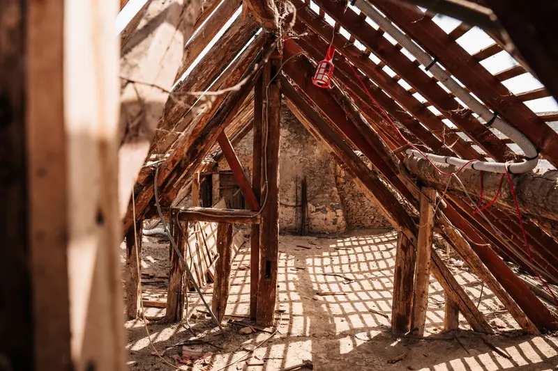

Quick Answers
Roof deck foam or a deeper attic floor?
Follow the ductwork. If the air handler and ducts live in the attic, spray foam on the roof deck pulls them inside the conditioned part of the house. If the attic holds nothing but wiring and joists, sealing the floor and blowing insulation deeper usually reaches a higher R-value for less money.
Is R-38 enough for a Knoxville attic?
R-38 meets Tennessee's code, but it is not where we would stop. The state kept the 2009 insulation table, so R-38 is the prescriptive ceiling minimum. ENERGY STAR recommends R-49 for a Zone 4A attic that already has 3 to 4 inches and R-60 for one that starts empty.
What rules apply to a sealed, unvented attic?
IRC section R806.5 governs them. The attic must sit inside the thermal envelope, the ceiling side cannot carry a Class I vapor retarder, and in Zone 4A any fiber insulation under the deck needs at least R-15 of air-impermeable foam against the sheathing above it.
Signs Your Attic Needs Work
- Upstairs bedrooms or a bonus room stay hot on summer afternoons.
- The tops of the ceiling joists show, or the insulation is thin and uneven.
- Insulation looks gray or black above wall top plates, a sign house air has leaked through it for years.
- The air handler and ductwork sit in the attic and struggle on the hottest days.
- Old insulation is damp, packed flat, or full of rodent droppings.
A tape measure tells you a lot. ENERGY STAR converts existing depth at roughly R-3 per inch, so 6 inches of old insulation is about R-18, less than half the R-38 state minimum.
How Attic Insulation Works
Both paths begin at the holes between your rooms and the attic. DOE's homeowner insulation guide puts sealing attic air leaks ahead of adding insulation, because insulation slows heat but lets air move through it.

Path one: an air sealed, deeper attic floor
Seal the floor
We foam and caulk top plates, wiring and plumbing holes, duct boots and open chases, then weatherstrip and insulate the hatch.
Protect clearances
One manufacturer's attic chart says to keep loose fill 3 inches back from recessed cans without an IC label and out of flue clearances. Attic baffles, also called rafter vents, keep the soffit vents open at the eaves.
Blow to a measured depth
Depth rulers go up first. One blown fiberglass chart requires at least 13.5 inches for R-38 and 17 inches for R-49. One cellulose chart lists 10.4 settled inches for R-38 and 13.3 for R-49.
Path two: a sealed roof deck
Clear the attic floor
The old floor insulation usually comes out so the ceiling does not act as a second, competing boundary, and the penetrations beneath it get sealed.
Spray the deck and gables
About 2 to 2.5 inches of closed cell supplies the R-15 air-impermeable layer when fiber fills the rest of the bay. Open cell is allowed at 5.5 to 10 inches depending on the product report, and needs roughly 10 inches to reach R-38 alone.
Cover, coat and air out
In a service-only attic, exposed foam gets an ignition barrier such as 1.5 inches of mineral fiber, or an intumescent coating the foam was tested with. EPA notes many manufacturers recommend about 24 hours before occupants return.
Attic Insulation Cost in Knoxville
Roof deck foam is priced by the roof underside, measured along the slope, plus gables and foam depth. A blown-in floor is priced by floor area and target R-value. Old insulation removal and tight attics add labor. All figures below are national guide ranges from October 2026, not our prices.
| Attic job | National range | Source |
|---|---|---|
| Whole attic, spray foam | $1,500 to $7,400 | This Old House (Apr. 2026) |
| Whole attic, spray foam | $3,000 to $8,000 | HomeGuide (2026) |
| Fiberglass blown on the attic floor | $1.65 to $2.60 per sq ft | Fixr (Aug. 2025) |
| Cellulose blown on the attic floor | $1.75 to $3.80 per sq ft | Fixr (Aug. 2025) |
| Sealing the attic floor first | $250 to $750 | HomeAdvisor (2025) |
As a ballpark, a 1,500 square foot attic floor blown with fiberglass at Fixr's range comes to about $2,475 to $3,900 before air sealing. TVA EnergyRight lists a $300 attic rebate when a Quality Contractor Network member does the work. See the Knoxville insulation cost guide for more, or call (865) 564-7823 for a free estimate on your own attic.
Attics in East Tennessee
NOAA's 1991 to 2020 normals put Knoxville's average July high at 88.4 F, and a vented attic under a sunny roof runs far hotter. Ducts crossing that space shed cooling before it reaches a register, so upstairs rooms at the end of long runs suffer first.
Tennessee's attic minimum also trails the model codes. The unamended 2018 IECC asks for R-49 in a Zone 4 ceiling and the 2021 edition asks for R-60, while the state still prescribes R-38.
Humidity matters for the roof deck choice. DOE's spray foam guide accepts open cell under the deck in humid climates when the interior finish lets vapor pass. For hot rooms over a garage, the fix often sits in the knee walls and floor, covered on our bonus room insulation page.
What the Free Attic Estimate Includes
- Measurements of the attic floor, and of the roof underside when a sealed deck is an option.
- Depth readings in several spots, plus notes on dampness, droppings or matted areas.
- Where the air handler, ducts, bath fans and recessed cans sit.
- A look at the roof sheathing from below for stains or past leaks.
- A written price for the path we recommend, and for the other one when both make sense.
Materials and Specs
These are the numbers we write on an attic work order. Each comes from code text or a manufacturer's chart.
| Item | Spec |
|---|---|
| Ceiling R-value | R-38 is the Tennessee prescriptive minimum; ENERGY STAR targets R-49 over 3 to 4 existing inches and R-60 in an empty attic |
| Bag count per 1,000 sq ft for R-38 | 19 bags of blown fiberglass on one chart, 52.6 bags of cellulose on another, with depth rulers confirming settled thickness |
| Unvented attic (IRC R806.5 table) | R-15 of air-impermeable insulation against the roof sheathing in Zone 4A, roughly 2 to 2.5 inches of closed cell |
| Attic baffles (rafter vents) | Set in each vented rafter bay at the eaves so loose fill cannot choke the soffit intake |
| Top plate air sealing | Foam or caulk on every top plate, wire hole and vent pipe before any insulation goes down |
| Ignition barrier for attic foam | Mineral fiber at 1.5 inches, 1/4 inch wood structural panel, 3/8 inch gypsum, or a listed intumescent coating (3 to 10 mils dry on one data sheet) |
| Recessed light clearance | Loose fill held 3 inches back from cans not rated IC, and kept out of flue clearances |
Attic Insulation FAQ
Related Services
- Open cell spray foam: the softer, lower-cost foam that suits most roof decks.
- Blown-in insulation: fiberglass or cellulose blown to a measured depth over a sealed floor.
- Air sealing: the top plate, chase and hatch work that belongs before new attic insulation.
Where We Do This Most
- Farragut: the median home dates to 1992, so many attics still hold the original builder insulation.
- Karns: roughly 44 percent of the 37931 ZIP's housing is from 2000 on, so comparing roof deck foam with a deeper floor is worth doing.
- Maryville: the city enforces the 2024 IECC as of January 2026, so we confirm local numbers on permitted work.
- West Knoxville: West Hills began in the 1950s as a ranch-house subdivision, and long, low ranch attics suit a sealed blown-in floor.
- Morristown: about 58 percent of homes predate 1980, and many older ranches have a few thin inches where R-38 belongs.
Get a Straight Answer on Your Attic
You do not need to know foam from blown-in before you call. Tell us which rooms bother you, and we will measure and put the options in writing. Call (865) 564-7823 to set up your free estimate.